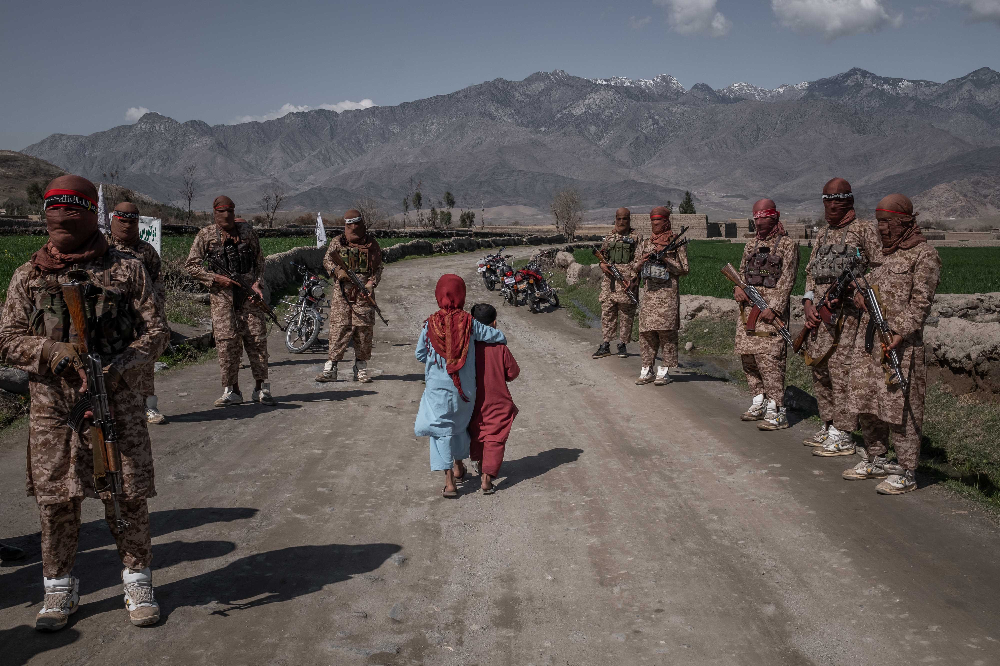

2060 - Afghanistan
2060. Cosa sarà cambiato? Guardare il futuro e prevederlo, nei limiti dell'umanità, è un obiettivo difficilmente raggiungibile, ma con un po' di analisi geopolitica e cautela si possono compiere alcune considerazioni fondate sul presente.
Dopo la presa di Kabul del Ferragosto del 2021 l'Afghanistan è presto tornato in secondo piano nella scena mondiale, soprattutto con l'esplosione del conflitto Ucraino. Eppure la questione che aveva tenuto preoccupato l'Occidente nell'estate scorsa non si è evoluta particolarmente in questi mesi.
La siccità che aveva colpito il paese lo tiene ancora in ginocchio, la condizione femminile è peggiorata nuovamente e l'indebolimento del mercato del papavero da oppio, per quanto discutibile sul livello morale, infierisce su un'economia completamente affossata
Le prospettive geopolitiche del paese non sembrano poter tornare a livelli pari a quelli storici. Un nuovo intervento statunitense non sembra probabile al momento e il paese è destinato ad entrare nella sfera d'influenza Cinese in Asia Centrale al fianco del Pakistan.
Osservando alcune prospettive più a lungo termine, sembra difficile che il Governo Talibano possa unire sotto la Mezzaluna e la Stella il popolo Afghano (dato che è assolutamente impossibile e non obiettivo talibano promuovere il nazionalismo Pashtun, viste anche le relazioni con Islamabad). La geografia del paese rende ardua una tale impresa di unione nazionale, prospettando per il paese una fase di imprecisata durata di precario equilibrio, con un governo violento e militarista che soggiogherà il popolo Afghano, privandolo della sua libertà e, con quasi totale certezza, di qualunque prospettiva politico-economica di influenza (anche solo regionale).
Intanto il rischio immediato è di perdere anche il supporto dei propri vicini: a causa delle sanzioni economiche imposte a Kabul, questa fatica a pagare l'elettricità fornita dai vicini paesi centro-asiatici (come Uzbekistan e Tagikistan), che potrebbero decidere di voltare le spalle all'Afghanistan, lasciando a quel punto nella miseria.
Come già anticipato, l'Afghanistan rientrerà in un più ampio piano della Cina nel controllo del continente Asiatico anche su terra (nonostante le prospettive cinesi siano ormai verso il mare). Pechino infatti non esita (diversamente dall'Occidente) a tapparsi il naso (qualora fosse neccessario per Xi Jinping&Co) di fronte a politiche anti-democratiche pur di fornire investimenti che ne aumentino l'influenza.
Indipendente Trockista22 Maggio 2022